1What you're building
A round light-up badge. A 555 timer (U1) makes a steady tick. A CD4017 counter (U2) takes each tick and lights the LEDs one after another, so they chase around the board. The trimmer (RV1) sets the speed. Powered by a single CR2032 coin cell.
2Tools & a 20-second soldering primer
You need
- Soldering iron (~ 320–350 °C) + thin solder
- Flush side-cutters (to trim leads)
- Something to hold the board (helping hands / tape)
- A CR2032 coin cell to test
How a joint is made
- Push the lead through from the printed side.
- Heat the pad and the lead together for ~1 second.
- Feed solder into the joint (not onto the tip) until it forms a small shiny cone.
- Remove solder, then iron. Snip the excess lead.
3The components
Photos below are of the exact parts (from LCSC). Match each to its silkscreen label. Note the two polarity tags: non-polar · any way has a direction
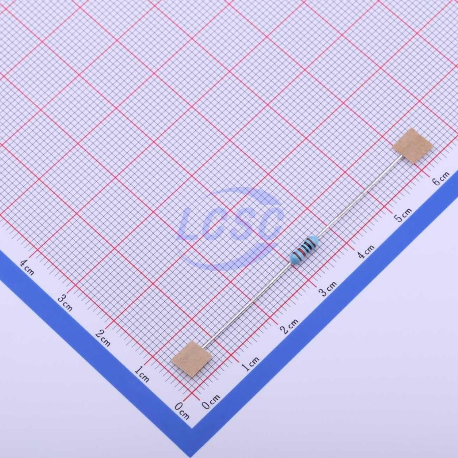
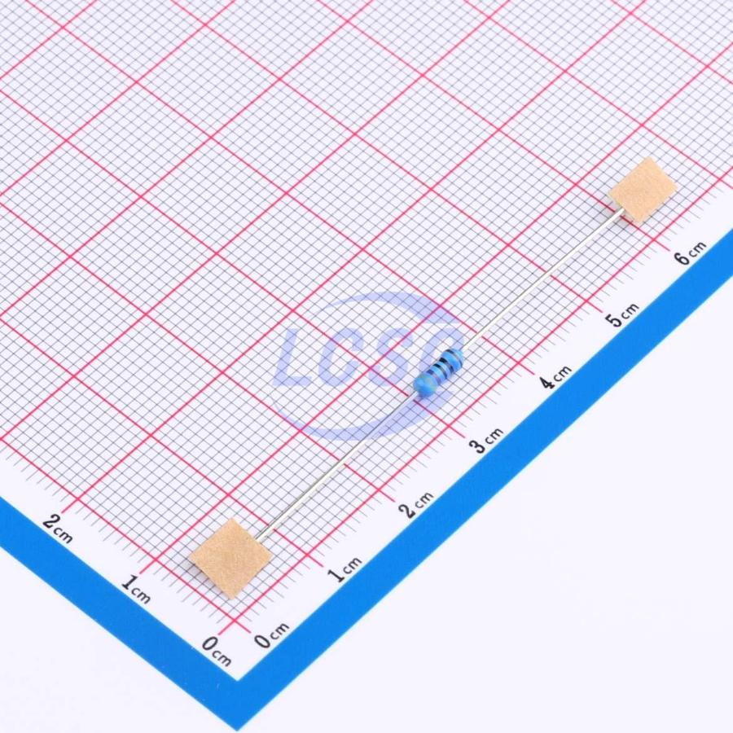
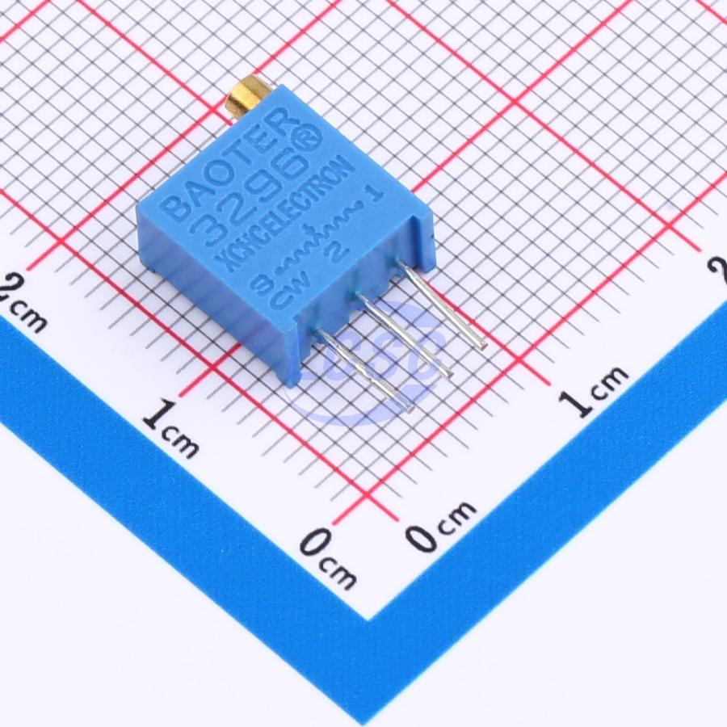
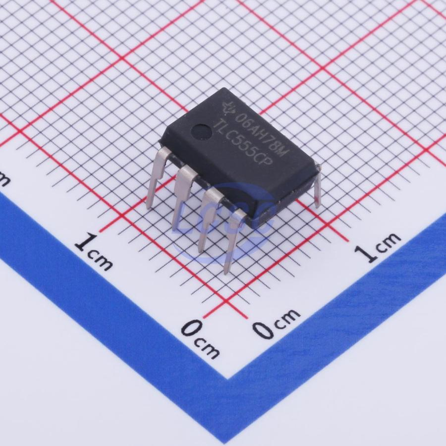
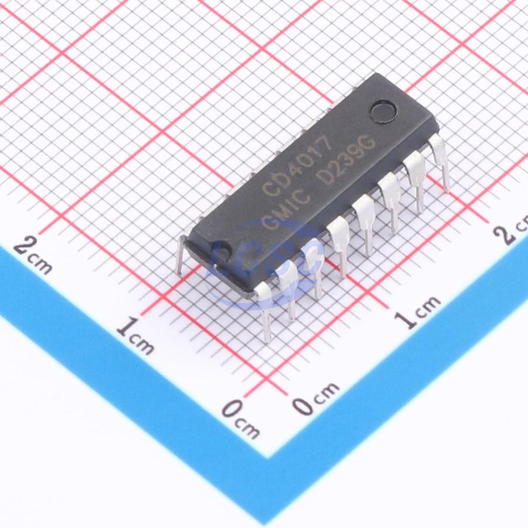
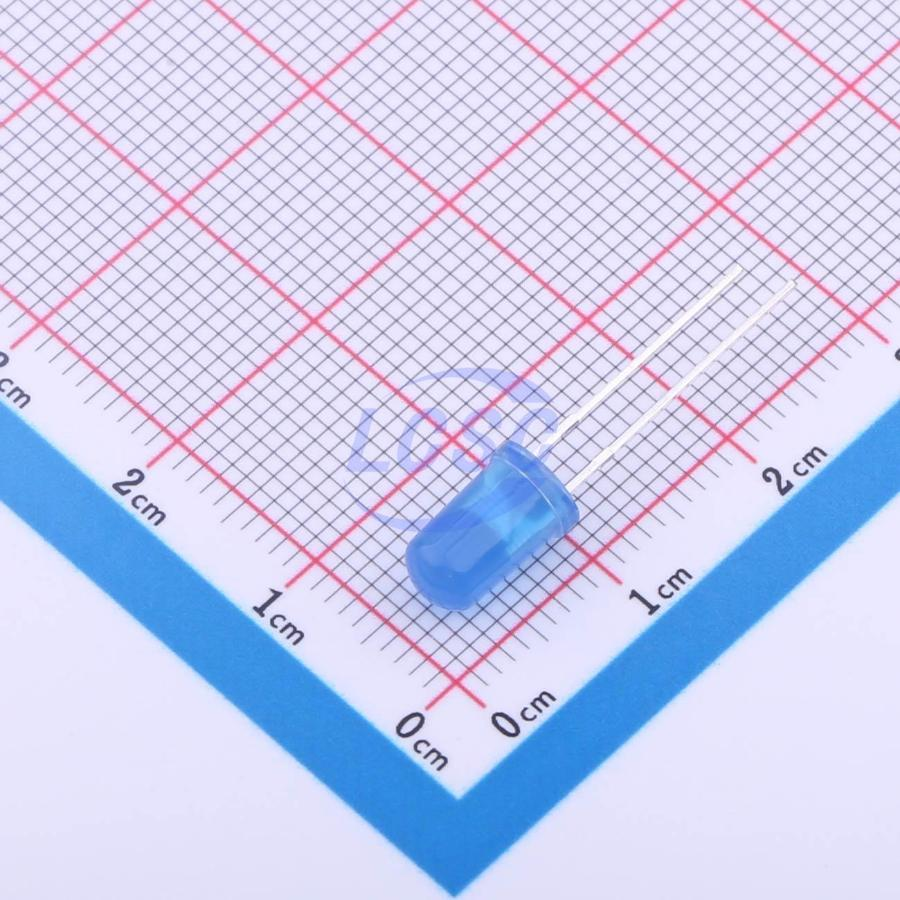
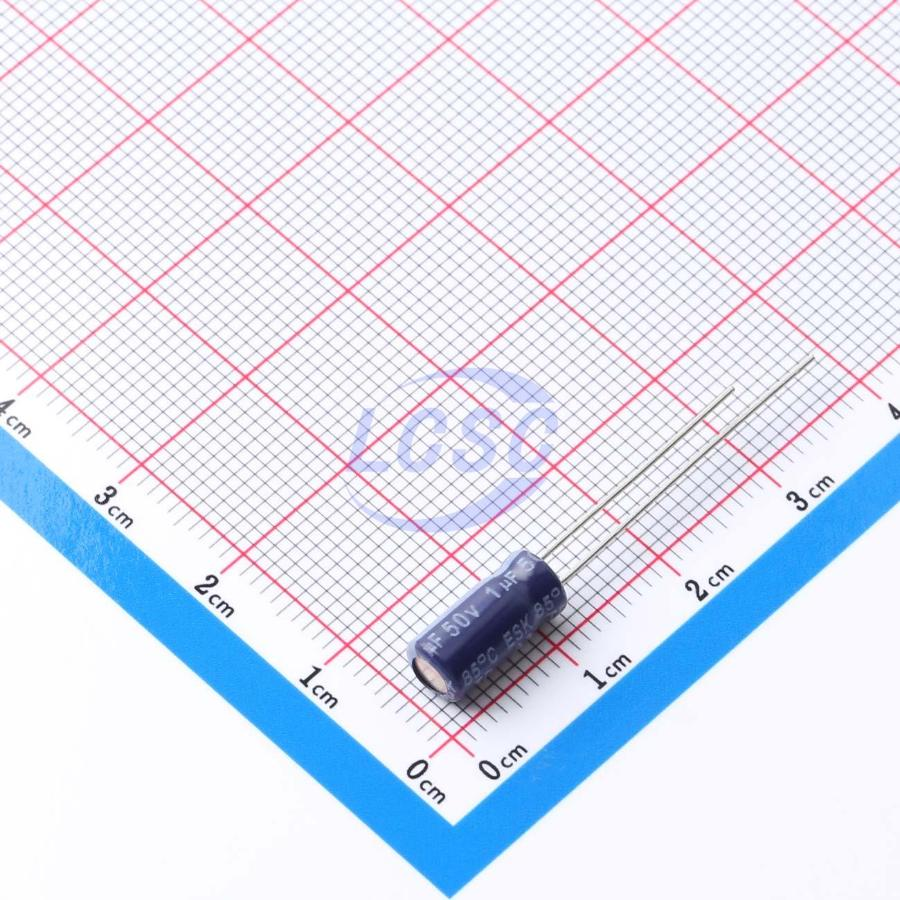
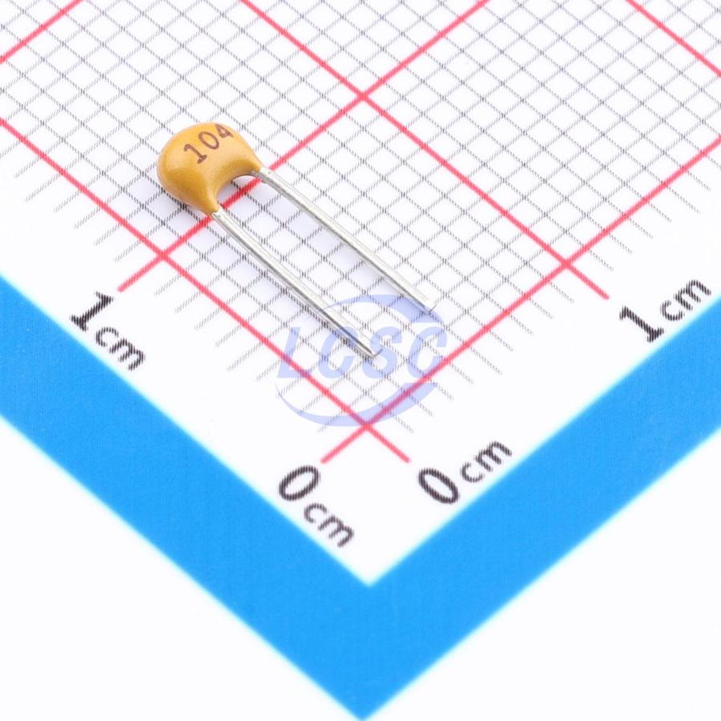
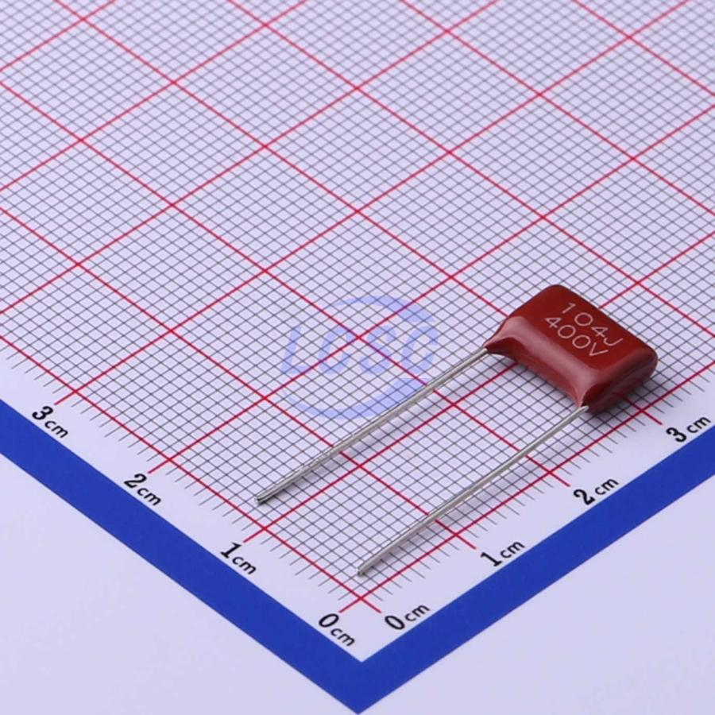
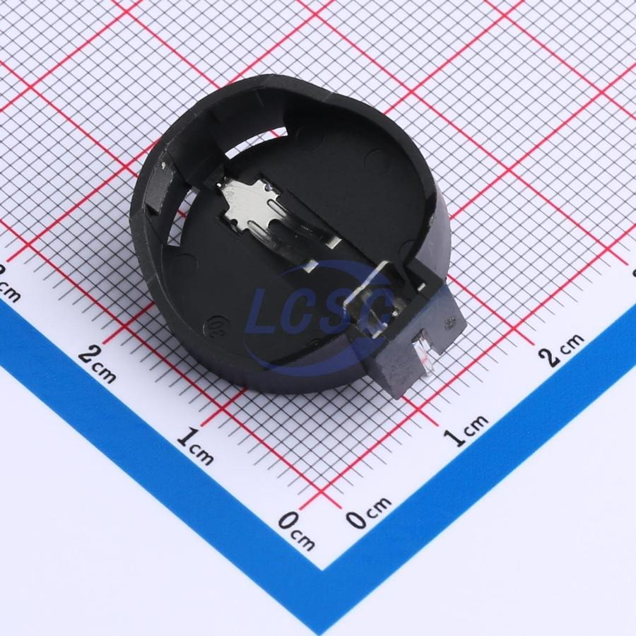
4Direction matters — these 3 go only one way
Resistors, the 100 nF and 10 nF caps, and the trimmer don't care which way round they sit. The chips, the LEDs, and the 1 µF electrolytic do. Get these right and the badge works first try.
The two chips — U1 & U2
Each chip has a half-moon notch at one end (and often a dotted pin-1 corner). The board's printed outline has the same notch drawn on it. Rotate the chip so its notch lines up with the notch on the silkscreen, then press it in.
On this board: TLC555P (U1) notch points up toward the cap row; CD4017BE (U2) notch faces the trimmer (RV1) side. Always go by the printed outline.
The LEDs — D1 to D4
An LED has a long leg (+ / anode) and a short leg on the side where the plastic rim is flattened (– / cathode).
The silkscreen circle for each LED has one flat edge — line the LED's flat side up with the flat on the print. Short leg to the flat. All four LEDs face the same logic; just follow each printed outline.
The 1 µF electrolytic — C1
This metal-can cap is the only polarized capacitor. It has a printed stripe down one side marking the negative (–) lead, which is also the shorter leg. The other, longer leg is positive (+).
C1 is the left-most of the three top caps (marked 1u). Put the – stripe / short leg in the inner hole (the one nearest the 10n cap — that pad is ground) and the + long leg in the outer hole. Backwards, an electrolytic can bulge or fail.
Everything else
Resistors (R1, R2–R5), the 10n/100n and 100n ceramics/film (C2, C3) are symmetric — either orientation is fine. The trimmer (RV1) and battery holder (BAT1) have an odd leg pattern and physically fit only one way.
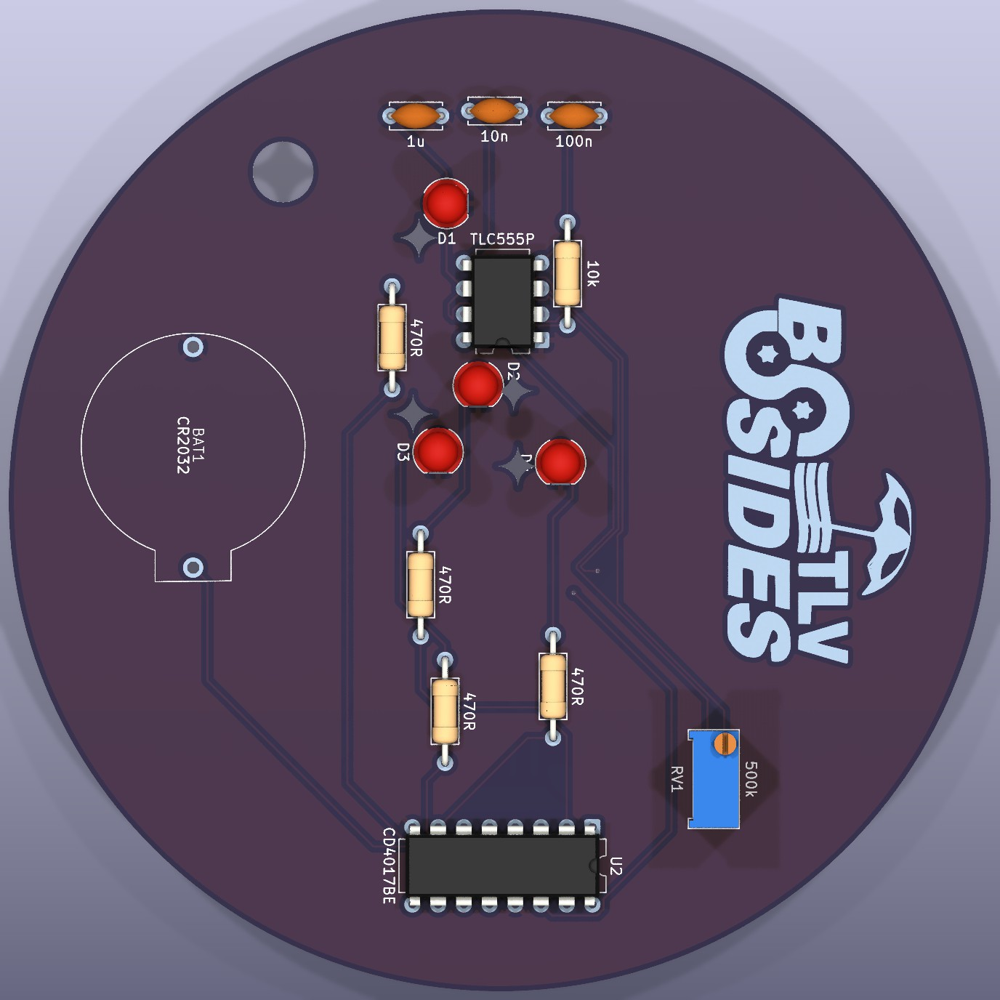
5Soldering order — shortest parts first
Work from the flattest components up to the tallest. That way the board can lie face-down on the bench and each part stays pressed against it while you solder.
- Resistors — R1 (10k) and R2–R5 (470R). Bend the legs, drop each on its label, solder, snip. Double-check the 10k (Brown-Black-Black-Red-Brown) goes to the 10k spot and the four 470R to the 470R spots.
- The two chips — U1 (TLC555P) & U2 (CD4017BE). Match the notch to the printed notch. Solder one corner pin, check it sits flat, then do the rest. (No sockets in this kit — the chips solder straight in.)
- Ceramic / film caps — C2 (100n here) & C3 (100n). Non-polar, any way round.
- LEDs — D1–D4. Flat side / short leg to the flat on the silkscreen. Solder one leg, confirm the LED stands straight, then the other.
- 1 µF electrolytic — C1. Stripe / short leg (–) to the inner (10n-side) hole; long leg (+) to the outer hole.
- Trimmer — RV1 (500k). Press flat, solder its three legs.
- Battery holder — BAT1. Tallest part, last. Make sure it sits flush; solder its tabs well (they take mechanical stress when you insert the cell).
6Power up & adjust
- Inspect first. All joints shiny little cones, no blobs bridging two pads, every lead snipped. Re-check the chip notches, LED flats and the C1 stripe.
- Insert the CR2032 into BAT1, + (printed side) facing up, away from the board.
- Watch the LEDs chase. Then turn RV1 slowly with a small screwdriver to speed the chase up or slow it down.
If it doesn't light
- Nothing at all
- Check the coin cell orientation (+ up) and that the holder tabs are well soldered. Re-flow any dull joint on U1, U2 and the battery holder.
- One LED never lights, others do
- That LED is in backwards or has a cold joint — its flat/short leg must go to the flat on the print.
- LEDs light but never move / chase
- Suspect U1 (555) or its timing parts: C1 orientation (stripe to the inner/ground hole), the 10k (R1), and the 1 µF. Also confirm U2's notch is correct.
- Chase speed won't change
- Re-solder RV1's three legs and give the trimmer a full sweep.
7You're done 🎉
Wear it, trade it, and welcome to BSidesTLV. The whole trick was simple: every part belongs on its printed label, and the board shows you which way round the chips, LEDs and 1 µF cap go.